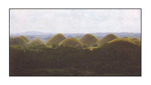

Exploring
a Summer Capital on a Rainy Day
by: Dieudieu Soliva
After
celebrating the much awaited and publicized wedding of our
very own Glen Bertulfo and his bride Janita Yulo - where we
were part of the entourage -Brian, Joel and I were bound for
Bohol.
On our way to Marabut Beach in Samar, it was the couple’s
treat, Emar - the bride’s colleague and our good friend,
spontaneously decided to come with us to Bohol. It was a good
thing that she was able to persuade her friend Myra - the
maid of honor, to accompany her. Emar had to postpone her
scheduled trip abroad just to be with us.
We first headed to Ormoc City together with the couple and
Glen’s mom to catch our trip to Cebu City via the Supercat
(nice ride huh). On our way to Cebu, I called my aunt who
was based there to meet me at the pier since it was my very
first time to set foot at her adopted province. When we arrived
at the pier, the trip to Tagbilaran City was just about to
leave. This left us with no other choice but to depart immediately.
We were not given a chance to even take a peek at what Cebu
had to offer. Worse, my aunt had a headache spending her precious
time waiting for me at the pier.
When we arrived at the Tagbilaran pier, the rain was still
pouring. This left some of us wondering how we were going
to spend two rainy days on the beach. This really was not
news to us since we already had an inkling about the rainy
weather during our stay in Leyte. After we agreed to rent
a local guide and his van, we had lunch in a cozy restaurant
leaving all the ordering to Brian, who of course is the point
man when it comes to food (yummy).
We stayed at the Dumaloan Beach Resort in Panglao Island.
Panglao Island lies just opposite Tagbilaran City, and is
connected to Bohol by two bridges. It consists of two muncipalities,
Dauis in the north and Panglao in the south. The island is
easy to reach and has a number of wonderful white beaches,
which means that on this island, most of Bohol’s hotels
and resorts can be found.
It was raining non-stop all day for two days. The warm water
and white sand, plus the fact that there were only a few people
around, made our stay more exciting. It could have been livelier
if the sun was present.
We also visited the Hinagdanan Cave, the Blood Compact site,
the Baclayon Church (oldest church in the country) and the
famous Chocolate Hills. But at that time, the Chocolate Hills
were greener than brown because the grass covering the hills
were still fresh. We didn’t get to see tarsiers and
the man-made forest because Loboc (the town where these items
can be found) was flooded due to the continuous rain.
We also got the chance to visit the house (turned museum)
of ex-President Carlos P. Garcia. Joel got so excited that
he was able to see a tarsier at this place, not alive though
but preserved.
Call it luck, divine intervention, or what have you, but
we were able to spend at least a minute basking in the sun
under the Bohol sky. Unfortunately, this was when our plane
was about to take-off. At least, this gave us more reason
to go back to Bohol.
Our
Bohol Getaway Pix >>
|